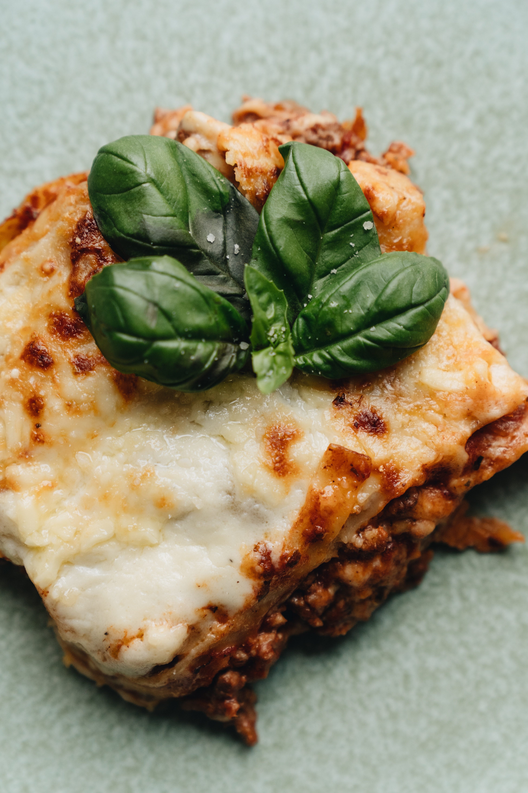

It's really that good
If you've come looking in search of the perfect lasagna recipe, have I got
something for you. Okay, now that that's out of the way let me cut to the
chase; I can't cook and this is the absolute easiest recipe I could find
I figured that by picking the lasagna suggestion, "maybe it's fairly simple?"
Come to find out, the average recipe consists of about 500 different ingredients.
Instead I found the absolute simplest recipe I could.
Ingredients
- 1 pound lean ground beef
- 1(32 ounce)jar spaghetti sauce
- 32 ounces cottage cheese
- 3 cups shredded mozzarella cheese, divided
- 2 eggs
- 1/2 cup grated Parmesan cheese
- 2 teaspoons dried parsley
- salt to taste
- ground black pepper to taste
- 9 lasagna noodles
- 1/2 cup water
Steps
- Preheat the oven to 350 degrees F (175 degrees C).
- In a large skillet over medium-high heat, cook and stir
ground beef until it turns brown and crumbly, which usually
takes around 8 to 10 minutes. After cooking, drain and discard
any excess grease. Add spaghetti sauce to the cooked ground beef
and let it simmer for about 5 minutes.
- Combine cottage cheese, 2 cups of mozzarella, eggs,
half of the Parmesan, dried parsley, salt, and pepper in
a bowl.
-
Take a 9x13-inch baking dish and spread 3/4 cup of the prepared sauce
evenly at the bottom. Next, place 3 uncooked lasagna noodles on top of
the sauce. Add 1 3/4 cups of the cheese mixture and 1/4 cup of sauce as
the next layers. Repeat the layers once more. Finally, top the lasagna
with the remaining 3 noodles, the rest of the sauce, mozzarella, and
Parmesan cheese. Pour 1/2 cup of water along the edges of the dish.
Cover the dish tightly with aluminum foil.
-
Bake the lasagna in the preheated oven for 45 minutes. Afterward,
remove the foil and bake for an additional 10 minutes, allowing the
top to become golden and bubbly. Let the lasagna stand for 10 minutes
before serving.